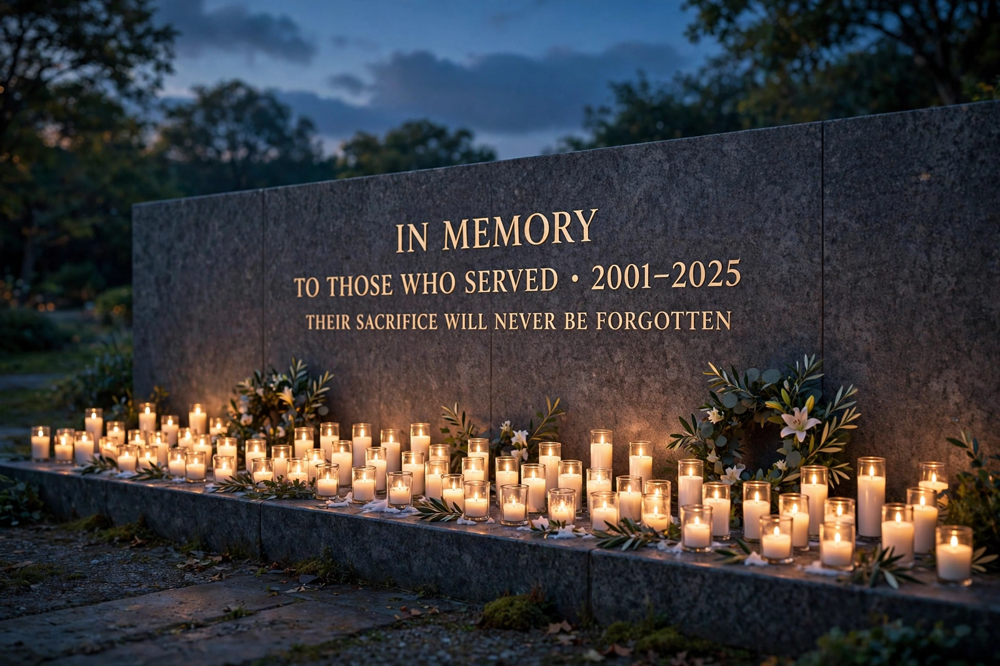

| Genocide | |
|---|---|
 | |
| Term coined | Raphael Lemkin, 1944 |
| Legal basis | Genocide Convention (1948) |
Genocide is the intentional destruction of a people in whole or in part. The term was coined in 1944 by the Polish-Jewish lawyer Raphael Lemkin, combining the Greek genos (race, tribe) with the Latin -cide (killing). In 1948, the United Nations adopted the Convention on the Prevention and Punishment of the Crime of Genocide, which defines genocide as acts committed with intent to destroy, in whole or in part, a national, ethnical, racial or religious group, including killing members of the group, causing serious bodily or mental harm, inflicting conditions of life calculated to bring about its physical destruction, imposing measures to prevent births, and forcibly transferring children.
Lemkin developed the concept in response to the Armenian genocide of 1915 and the Holocaust then unfolding in Europe. The term was used during the Nuremberg trials, and the 1948 Convention made genocide a crime under international law whether committed in time of peace or war. The Convention obliges states to prevent and punish genocide, and later tribunals for Yugoslavia and Rwanda, and the International Criminal Court under the Rome Statute, adopted the same definition.
Events widely recognised as genocides include the Herero and Nama genocide (1904–1908), the Armenian genocide (1915–1917), the Holocaust, the Cambodian genocide, the Rwandan genocide of 1994, and the Bosnian genocide at Srebrenica in 1995. Scholars continue to debate the application of the term to other episodes, including colonial-era mass killings and the Holodomor, and to debate whether the legal definition — which excludes political and social groups — is too narrow.
Genocide prevention involves early warning, diplomacy, sanctions and, controversially, military intervention under doctrines such as the responsibility to protect. Genocide denial — the assertion that a genocide did not occur or was not as described — is regarded by scholars as a final stage of genocide and is criminalised in some countries.